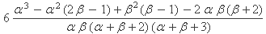

Font Styles
Here we go with some inline formatting: italic, bold, underline,
teletype, strikethrough,
we can combine styles as well: bold italic,
teletype with underline.
Replaceable Text
Text that is intended to be user-replaceable is
rendered like this
.
Quotations
Here we go: “A question that sometimes drives me hazy: am I or are the others crazy?”--Einstein
Note the proper left and right quote marks. Also, while you can simply use ordinary quote marks like "quoted", our quotation, above, will generate correct DocBook quotations (e.g. <quote>quoted</quote>).
Like all phrase elements, quotations may be nested. Example:
“Here's the rule for bargains: ‘Do other men, for they would do you.’ That's the true business precept.”
Inline Code
This text has inlined code int main() { return 0; }
in it. The code should be syntax highlighted.
Links
Try this: this is boost's website.... it should be visible as a link.
Footnotes
Here's one [1] .
And here's another [2] .
A numbered list:
- One
- Two
-
Three
- Three.a
- Three.b
- Three.c
-
Four
-
Four.a
- Four.a.i
- Four.a.ii
-
Four.a
- Five
An unordered list:
- First
- Second
- Third
A mixture of the two:
-
1
-
1.a
- 1.a.1
- 1.a.2
- 1.b
-
1.a
-
2
- 2.a
-
2.b
- 2.b.1
-
2.b.2
- 2.b.2.a
- 2.b.2.b
These should be syntax highlighted:
#include <iostream> int main() { // Sample code std::cout << "Hello, World\n"; return 0; }
Now let's include a larger example, this may span several pages and should not be chopped off half way through... some FO processors get this wrong!
namespace boost{ template <class BidirectionalIterator> class sub_match; typedef sub_match<const char*> csub_match; typedef sub_match<const wchar_t*> wcsub_match; typedef sub_match<std::string::const_iterator> ssub_match; typedef sub_match<std::wstring::const_iterator> wssub_match; template <class BidirectionalIterator> class sub_match : public std::pair<BidirectionalIterator, BidirectionalIterator> { public: typedef typename iterator_traits<BidirectionalIterator>::value_type value_type; typedef typename iterator_traits<BidirectionalIterator>::difference_type difference_type; typedef BidirectionalIterator iterator; bool matched; difference_type length()const; operator basic_string<value_type>()const; basic_string<value_type> str()const; int compare(const sub_match& s)const; int compare(const basic_string<value_type>& s)const; int compare(const value_type* s)const; #ifdef BOOST_REGEX_MATCH_EXTRA typedef implementation-private capture_sequence_type; const capture_sequence_type& captures()const; #endif }; // // comparisons to another sub_match: // template <class BidirectionalIterator> bool operator == (const sub_match<BidirectionalIterator>& lhs, const sub_match<BidirectionalIterator>& rhs); template <class BidirectionalIterator> bool operator != (const sub_match<BidirectionalIterator>& lhs, const sub_match<BidirectionalIterator>& rhs); template <class BidirectionalIterator> bool operator < (const sub_match<BidirectionalIterator>& lhs, const sub_match<BidirectionalIterator>& rhs); template <class BidirectionalIterator> bool operator <= (const sub_match<BidirectionalIterator>& lhs, const sub_match<BidirectionalIterator>& rhs); template <class BidirectionalIterator> bool operator >= (const sub_match<BidirectionalIterator>& lhs, const sub_match<BidirectionalIterator>& rhs); template <class BidirectionalIterator> bool operator > (const sub_match<BidirectionalIterator>& lhs, const sub_match<BidirectionalIterator>& rhs); // // comparisons to a basic_string: // template <class BidirectionalIterator, class traits, class Allocator> bool operator == (const std::basic_string<iterator_traits<BidirectionalIterator>::value_type, traits, Allocator>& lhs, const sub_match<BidirectionalIterator>& rhs); template <class BidirectionalIterator, class traits, class Allocator> bool operator != (const std::basic_string<iterator_traits<BidirectionalIterator>::value_type, traits, Allocator>& lhs, const sub_match<BidirectionalIterator>& rhs); template <class BidirectionalIterator, class traits, class Allocator> bool operator < (const std::basic_string<iterator_traits<BidirectionalIterator>::value_type, traits, Allocator>& lhs, const sub_match<BidirectionalIterator>& rhs); template <class BidirectionalIterator, class traits, class Allocator> bool operator > (const std::basic_string<iterator_traits<BidirectionalIterator>::value_type, traits, Allocator>& lhs, const sub_match<BidirectionalIterator>& rhs); template <class BidirectionalIterator, class traits, class Allocator> bool operator >= (const std::basic_string<iterator_traits<BidirectionalIterator>::value_type, traits, Allocator>& lhs, const sub_match<BidirectionalIterator>& rhs); template <class BidirectionalIterator, class traits, class Allocator> bool operator <= (const std::basic_string<iterator_traits<BidirectionalIterator>::value_type, traits, Allocator>& lhs, const sub_match<BidirectionalIterator>& rhs); template <class BidirectionalIterator, class traits, class Allocator> bool operator == (const sub_match<BidirectionalIterator>& lhs, const std::basic_string<iterator_traits<BidirectionalIterator>::value_type, traits, Allocator>& rhs); template <class BidirectionalIterator, class traits, class Allocator> bool operator != (const sub_match<BidirectionalIterator>& lhs, const std::basic_string<iterator_traits<BidirectionalIterator>::value_type, traits, Allocator>& rhs); template <class BidirectionalIterator, class traits, class Allocator> bool operator < (const sub_match<BidirectionalIterator>& lhs, const std::basic_string<iterator_traits<BidirectionalIterator>::value_type, traits, Allocator>& rhs); template <class BidirectionalIterator, class traits, class Allocator> bool operator > (const sub_match<BidirectionalIterator>& lhs, const std::basic_string<iterator_traits<BidirectionalIterator>::value_type, traits, Allocator>& rhs); template <class BidirectionalIterator, class traits, class Allocator> bool operator >= (const sub_match<BidirectionalIterator>& lhs, const std::basic_string<iterator_traits<BidirectionalIterator>::value_type, traits, Allocator>& rhs); template <class BidirectionalIterator, class traits, class Allocator> bool operator <= (const sub_match<BidirectionalIterator>& lhs, const std::basic_string<iterator_traits<BidirectionalIterator>::value_type, traits, Allocator>& rhs); // // comparisons to a pointer to a character array: // template <class BidirectionalIterator> bool operator == (typename iterator_traits<BidirectionalIterator>::value_type const* lhs, const sub_match<BidirectionalIterator>& rhs); template <class BidirectionalIterator> bool operator != (typename iterator_traits<BidirectionalIterator>::value_type const* lhs, const sub_match<BidirectionalIterator>& rhs); template <class BidirectionalIterator> bool operator < (typename iterator_traits<BidirectionalIterator>::value_type const* lhs, const sub_match<BidirectionalIterator>& rhs); template <class BidirectionalIterator> bool operator > (typename iterator_traits<BidirectionalIterator>::value_type const* lhs, const sub_match<BidirectionalIterator>& rhs); template <class BidirectionalIterator> bool operator >= (typename iterator_traits<BidirectionalIterator>::value_type const* lhs, const sub_match<BidirectionalIterator>& rhs); template <class BidirectionalIterator> bool operator <= (typename iterator_traits<BidirectionalIterator>::value_type const* lhs, const sub_match<BidirectionalIterator>& rhs); template <class BidirectionalIterator> bool operator == (const sub_match<BidirectionalIterator>& lhs, typename iterator_traits<BidirectionalIterator>::value_type const* rhs); template <class BidirectionalIterator> bool operator != (const sub_match<BidirectionalIterator>& lhs, typename iterator_traits<BidirectionalIterator>::value_type const* rhs); template <class BidirectionalIterator> bool operator < ]##(const sub_match<BidirectionalIterator>& lhs, typename iterator_traits<BidirectionalIterator>::value_type const* rhs); template <class BidirectionalIterator> bool operator > (const sub_match<BidirectionalIterator>& lhs, typename iterator_traits<BidirectionalIterator>::value_type const* rhs); template <class BidirectionalIterator> bool operator >= (const sub_match<BidirectionalIterator>& lhs, typename iterator_traits<BidirectionalIterator>::value_type const* rhs); template <class BidirectionalIterator> bool operator <= (const sub_match<BidirectionalIterator>& lhs, typename iterator_traits<BidirectionalIterator>::value_type const* rhs); // // comparisons to a single character: // template <class BidirectionalIterator> bool operator == (typename iterator_traits<BidirectionalIterator>::value_type const& lhs, const sub_match<BidirectionalIterator>& rhs); template <class BidirectionalIterator> bool operator != (typename iterator_traits<BidirectionalIterator>::value_type const& lhs, const sub_match<BidirectionalIterator>& rhs); template <class BidirectionalIterator> bool operator < (typename iterator_traits<BidirectionalIterator>::value_type const& lhs, const sub_match<BidirectionalIterator>& rhs); template <class BidirectionalIterator> bool operator > (typename iterator_traits<BidirectionalIterator>::value_type const& lhs, const sub_match<BidirectionalIterator>& rhs); template <class BidirectionalIterator> bool operator >= (typename iterator_traits<BidirectionalIterator>::value_type const& lhs, const sub_match<BidirectionalIterator>& rhs); template <class BidirectionalIterator> bool operator <= (typename iterator_traits<BidirectionalIterator>::value_type const& lhs, const sub_match<BidirectionalIterator>& rhs); template <class BidirectionalIterator> bool operator == (const sub_match<BidirectionalIterator>& lhs, typename iterator_traits<BidirectionalIterator>::value_type const& rhs); template <class BidirectionalIterator> bool operator != (const sub_match<BidirectionalIterator>& lhs, typename iterator_traits<BidirectionalIterator>::value_type const& rhs); template <class BidirectionalIterator> bool operator < (const sub_match<BidirectionalIterator>& lhs, typename iterator_traits<BidirectionalIterator>::value_type const& rhs); template <class BidirectionalIterator> bool operator > (const sub_match<BidirectionalIterator>& lhs, typename iterator_traits<BidirectionalIterator>::value_type const& rhs); template <class BidirectionalIterator> bool operator >= (const sub_match<BidirectionalIterator>& lhs, typename iterator_traits<BidirectionalIterator>::value_type const& rhs); template <class BidirectionalIterator> bool operator <= (const sub_match<BidirectionalIterator>& lhs, typename iterator_traits<BidirectionalIterator>::value_type const& rhs); // // addition operators: // template <class BidirectionalIterator, class traits, class Allocator> std::basic_string<typename iterator_traits<BidirectionalIterator>::value_type, traits, Allocator> operator + (const std::basic_string<typename iterator_traits<BidirectionalIterator>::value_type, traits, Allocator>& s, const sub_match<BidirectionalIterator>& m); template <class BidirectionalIterator, class traits, class Allocator> std::basic_string<typename iterator_traits<BidirectionalIterator>::value_type, traits, Allocator> operator + (const sub_match<BidirectionalIterator>& m, const std::basic_string<typename iterator_traits<BidirectionalIterator>::value_type, traits, Allocator>& s); template <class BidirectionalIterator> std::basic_string<typename iterator_traits<BidirectionalIterator>::value_type> operator + (typename iterator_traits<BidirectionalIterator>::value_type const* s, const sub_match<BidirectionalIterator>& m); template <class BidirectionalIterator> std::basic_string<typename iterator_traits<BidirectionalIterator>::value_type> operator + (const sub_match<BidirectionalIterator>& m, typename iterator_traits<BidirectionalIterator>::value_type const * s); template <class BidirectionalIterator> std::basic_string<typename iterator_traits<BidirectionalIterator>::value_type> operator + (typename iterator_traits<BidirectionalIterator>::value_type const& s, const sub_match<BidirectionalIterator>& m); template <class BidirectionalIterator> std::basic_string<typename iterator_traits<BidirectionalIterator>::value_type> operator + (const sub_match<BidirectionalIterator>& m, typename iterator_traits<BidirectionalIterator>::value_type const& s); template <class BidirectionalIterator> std::basic_string<typename iterator_traits<BidirectionalIterator>::value_type> operator + (const sub_match<BidirectionalIterator>& m1, const sub_match<BidirectionalIterator>& m2); // // stream inserter: // template <class charT, class traits, class BidirectionalIterator> basic_ostream<charT, traits>& operator << (basic_ostream<charT, traits>& os, const sub_match<BidirectionalIterator>& m); } // namespace boost
Preformatted text
Here's some sample program output:
F test for equal standard deviations ____________________________________ Sample 1: Number of Observations = 240 Sample Standard Deviation = 65.549 Sample 2: Number of Observations = 240 Sample Standard Deviation = 61.854 Test Statistic = 1.123 CDF of test statistic: = 8.148e-001 Upper Critical Value at alpha: = 1.238e+000 Upper Critical Value at alpha/2: = 1.289e+000 Lower Critical Value at alpha: = 8.080e-001 Lower Critical Value at alpha/2: = 7.756e-001 Results for Alternative Hypothesis and alpha = 0.0500 Alternative Hypothesis Conclusion Standard deviations are unequal (two sided test) REJECTED Standard deviation 1 is less than standard deviation 2 REJECTED Standard deviation 1 is greater than standard deviation 2 REJECTED
Blockquote
Lets indent the next paragraph:
Here we go!!!
Admonishments
There are four admonishments supported by Docbook XML:
This is a note
![[Tip]](../images/tip.png)
This is a tip
![[Important]](../images/important.png)
This is important
This is a caution
![[Warning]](../images/warning.png)
This is a warning
They can contain more than one paragraph.
Headings
Now try rendering some heading styles:
Heading 1
Heading 2
Heading 3
Heading 4
Heading 5
Heading 6
Blurbs
Here's a big table with code and other tricky things:
Table 1. Notes on the Implementation of the Beta Distribution
|
Function |
Implementation Notes |
|---|---|
|
|
f(x;α,β) = xα - 1 (1 - x)β -1 / B(α, β) Implemented using ibeta_derivative(a, b, x). |
|
cdf |
Using the incomplete beta function ibeta(a, b, x) |
|
cdf complement |
ibetac(a, b, x) |
|
quantile |
Using the inverse incomplete beta function ibeta_inv(a, b, p) |
|
quantile from the complement |
ibetac_inv(a, b, q) |
|
mean |
|
|
variance |
|
|
mode |
|
|
skewness |
|
|
kurtosis excess |
 |
|
kurtosis |
|
|
parameter estimation |
|
|
alpha from mean and variance |
|
|
beta from mean and variance |
|
|
The member functions
from cdf and probability x and either
|
Implemented in terms of the inverse incomplete beta functions ibeta_inva, and ibeta_invb respectively. |
|
|
|
|
|
|
A Variable List
- term 1
- The definition of term 1
- term 2
- The definition of term 2
- term 3
- The definition of term 3
Here's some code with left-placed callouts:
class x { public:x() : n(0) { }
~x() { }
int get() const { return n; }
void set(int n_) { n = n_; } };
And again with callouts placed exactly where we put them:
std::string foo_bar()
| |
The Mythical FooBar. See Foobar for details |
| |
return 'em, foo-bar man! |